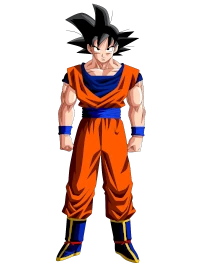

Na forma base, Son Goku luta sem qualquer transformação ativa. Ele utiliza apenas sua força natural, habilidades de combate e controle de ki adquiridos ao longo de seus treinamentos. Mesmo nesse estado, Goku atinge níveis extremamente altos de poder, principalmente nas fases mais avançadas da história em Dragon Ball Z e Dragon Ball Super.

A transformação em Super Saiyajin é alcançada pela primeira vez durante a batalha contra Frieza no planeta Namekusei. Quando Goku se transforma, seu cabelo fica loiro, seus olhos ficam esverdeados e uma aura dourada passa a envolver seu corpo. Essa forma aumenta drasticamente sua força, velocidade e capacidade de combate.

O Super Saiyajin 2 é uma evolução do Super Saiyajin tradicional. Nessa forma, o poder aumenta ainda mais e a aura passa a apresentar faíscas elétricas ao redor do corpo. A velocidade e a intensidade dos ataques também se tornam maiores, permitindo que Goku enfrente adversários mais poderosos.

O Super Saiyajin 3 representa uma transformação muito mais extrema. O cabelo de Goku cresce de forma longa até a cintura e suas sobrancelhas desaparecem, deixando sua expressão mais séria. Essa forma oferece um aumento enorme de poder, mas também consome muita energia, o que torna difícil mantê-la por muito tempo durante as batalhas.

O Super Saiyajin 4 é uma transformação que aparece em Dragon Ball GT. Diferente das outras formas de Super Saiyajin, essa transformação está ligada à natureza original dos Saiyajins e ao poder do Oozaru. Para alcançá-la, Goku primeiro se transforma no macaco gigante dourado e depois recupera sua consciência, condensando esse poder em uma forma humanoide.
Nessa forma, Goku apresenta mudanças físicas bem diferentes das transformações anteriores: seu corpo fica coberto por pelos vermelhos, seu cabelo volta a ser preto e seus olhos ficam com um contorno vermelho intenso. O poder dessa transformação é extremamente alto e combina força bruta com grande velocidade e resistência.
Apesar de não fazer parte da continuidade principal vista em Dragon Ball Super, o Super Saiyajin 4 se tornou uma das transformações mais populares do personagem Son Goku entre os fãs da franquia.

Introduzido nos acontecimentos de Dragon Ball Z: Battle of Gods, o Super Saiyajin God utiliza energia divina. Nessa transformação, o cabelo de Goku fica vermelho e seu corpo aparenta ser mais leve e ágil. O poder dessa forma é muito superior às transformações anteriores, permitindo que Goku enfrente inimigos com poderes divinos.

O Super Saiyajin Blue, também conhecido como Super Saiyajin God Super Saiyajin, combina o poder divino do Super Saiyajin God com a transformação Super Saiyajin. O cabelo e a aura passam a ter uma coloração azul intensa. Essa forma exige grande controle de energia e oferece um nível de poder extremamente elevado.

Durante o Torneio do Poder em Dragon Ball Super, Goku desperta o Instinto Superior em um estado ainda incompleto. Nesse estágio, seu corpo começa a reagir automaticamente aos ataques, permitindo esquivas extremamente rápidas sem depender do pensamento consciente. Apesar do enorme poder, Goku ainda não possui controle total dessa habilidade.

O Instinto Superior completo representa o domínio total dessa técnica divina. O cabelo de Goku fica prateado e sua aura adquire um brilho prateado intenso. Nesse estado, seus reflexos e movimentos se tornam praticamente perfeitos, permitindo que ele lute de maneira extremamente eficiente contra adversários muito poderosos, como Jiren.
Goku luta por justiça ou para salvar o mundo, mas sim pelo desejo egoísta de enfrentar oponentes fortes